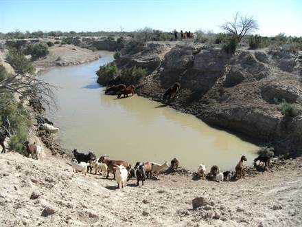

Las lagunas de Guanacache, o Huanacache, conocidas también (desde el siglo xx) como Bañados de Guanacache, se ubican en el noreste de la provincia de Mendoza, al sudeste de la provincia de San Juan y al noroeste de la provincia de San Luis, en el centro de la región argentina denominada Cuyo.
Hay una enorme diversidad en el humedal. En el estrato arbóreo: algarrobo (Prosopis flexuosa) y chañar (Geoffroea decorticans); en el estrato arbustivo: jarillas (Larrea spp.), chilca (Baccharis spp.), alpataco (Prosopis alpataco) y zampa (Atriplex lampa); en la vegetación palustre: junco (Scirpus californicus) y totora (Typha dominguensis); y en las herbáceas el junquillo (Sporobolus rigens), utilizado en cestería y en la fabricación de otras artesanías. Entre la fauna de las lagunas se hallan Edentados como peludos, piches, matacos y pichiciegos; y felinos como gatos monteses, gatos del pajonal, yaguarundíes o eyras, y pumas.
Este sistema palustre se ubica encuadrado entre las coordenadas 32º y 32º 38' S/ 68º 33' 36 a 68º 42' 20 O. El centro de esta cuenca, casi desecada durante el siglo xx, se ubica aproximadamente en las coordenadas 32°16′00″S 67°22′00″O (en las fotos satelitales de color verdadero las zonas más blanquecinas indican el área máxima cubierta por las aguas durante el siglo xix); siendo su actual remanente permanente la laguna Silverio, en la zona limítrofe entre la provincia de Mendoza y la provincia de San Luis. El de las lagunas de Guanacache corresponde a un sistema hidrológico exorreico, de lagunas y de bañados encadenados, alimentados por los ríos Mendoza y San Juan y, antiguamente, los desagües del Bermejo, que descarga por el río Desaguadero. En el pasado los bañados estuvieron habitados por la parcialidad del pueblo huarpe llamada lagunera. Los integrantes de este pueblo navegaban el extenso sistema de lagunas con embarcaciones semejantes a los "caballitos de totora" que usan los uru en el Lago Titicaca. Originalmente eran en total 25 lagunas[cita requerida] intercomunicadas y con abundantes islas, que se encontraban rodeadas de tierra fértil y abarcaban un área de unos 2500 km². Desde fines del siglo xix y hasta la actualidad, debido a la sobreexplotación de las aguas de los ríos Desaguadero, Mendoza y San Juan, se han ido secando, apareciendo sólo en temporadas de grandes deshielos que acrecientan el caudal de los ríos que la alimentan. Desde el 14 de diciembre de 1999 estas lagunas pertenecen al sistema Ramsar, con el objetivo de su recuperación. La parte sudoriental de las lagunas, en la provincia de San Luis, está dentro del parque nacional Sierra de las Quijadas.